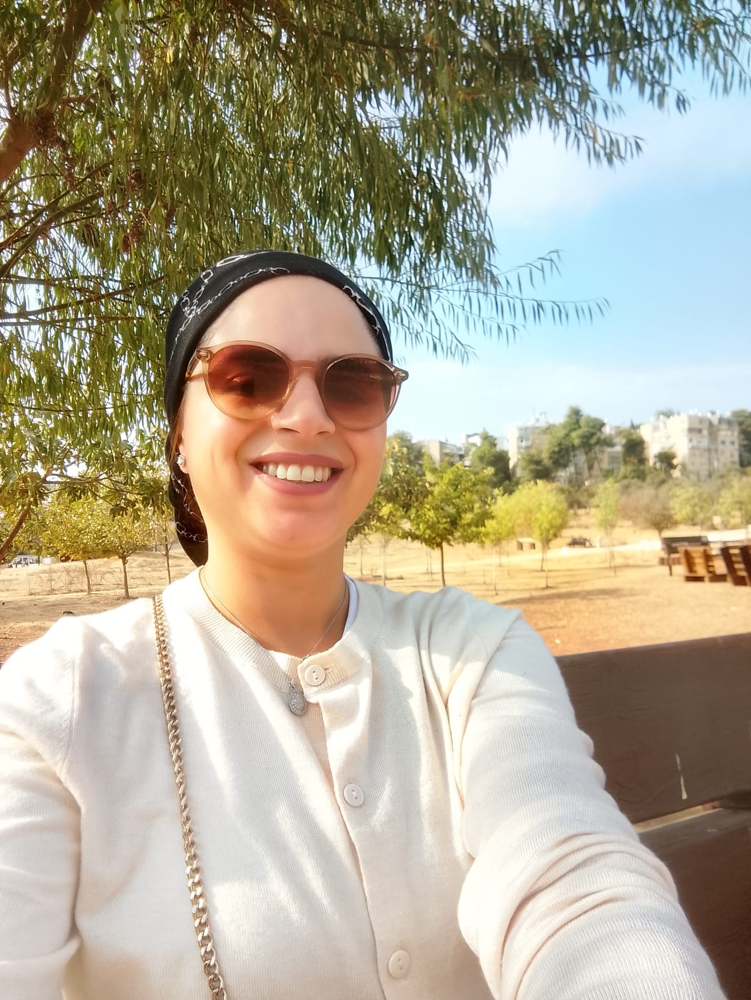
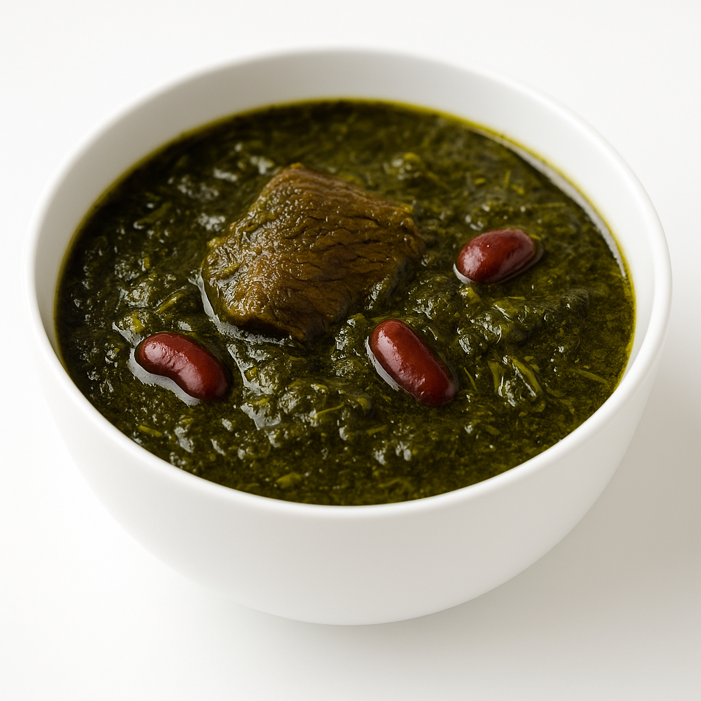

סיפורי טעם מנשמה אחת
אדל הלפרין
מטבח איראני ביתי – מקום שבו אוכל, זיכרון ונשמה נפגשים
כאן אני חולקת מתכונים מהמטבח האיראני והביתי שלי, יחד עם סיפורי טעם קטנים מהיום-יום. כל סיר הוא זיכרון, כל צלחת היא רגע של חום, וכל מתכון נולד מאהבה.
חורש סבזי – טעם של נשמה
חורש סבזי הוא אחד התבשילים הכי עמוקים ומנחמים במטבח האיראני: הרבה עלים ירוקים, שעועית אדומה ובשר שמתבשל לאט-לאט.
זה תבשיל שמחבר אותי לבית, לשורשים ולרגעים שקטים סביב השולחן המשפחתי. לכל סיר יש ריח אחר, לכל ערב יש סיפור משלו – והכול עובר דרך האש הקטנה על הגז.

מתכונים בדרך – סיפורי טעם קטנים
קצת עליי
אני אדל, אמא, אשת משפחה ואוהבת מטבחים חמים. המטבח בשבילי הוא מקום של לימוד, התנסות וצמיחה – בדיוק כמו החיים. אני אוהבת לקחת מתכון מוכר, להוסיף לו נגיעה אישית, ולראות איך הוא הופך לסיפור חדש.
באתר הזה אני משלבת בין אהבת האוכל לבין עבודה פנימית – הקשבה לנפש, זמן לחשוב, וליצור רגעים טובים סביב שולחן אחד.
יצירת קשר
אשמח לשיתופים, רעיונות ומתכונים אהובים מהמטבח שלכם.
טלפון: 058-7163206
אימייל: odel3206@gmail.com